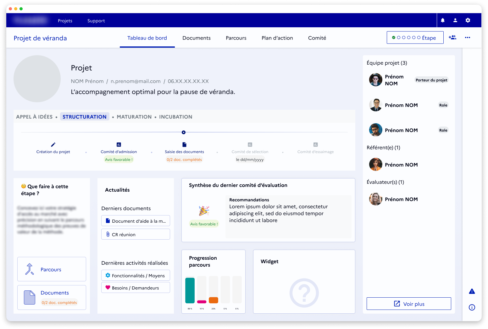
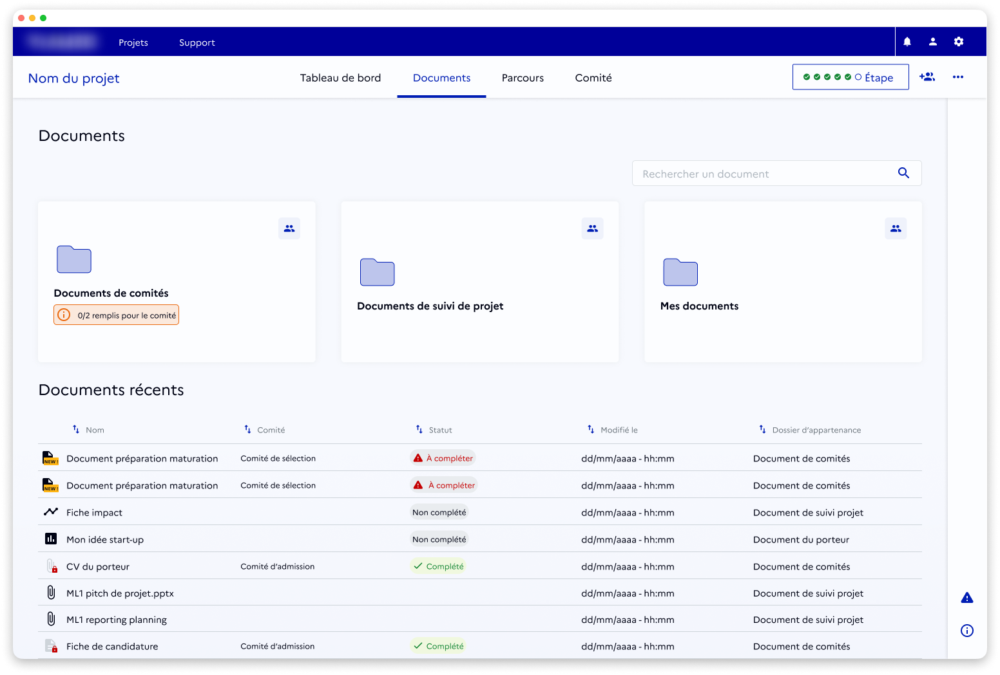
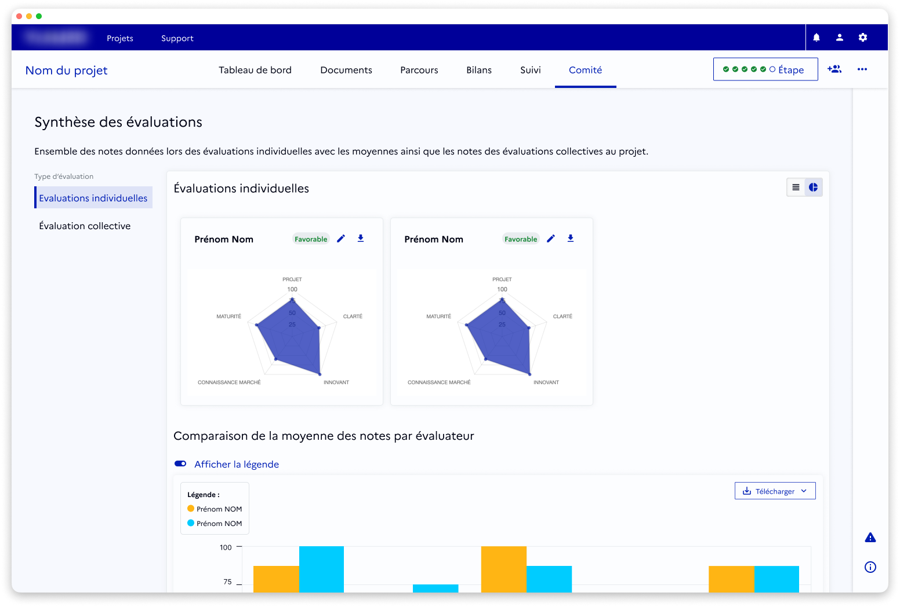

Plateforme de pilotage d'innovation
Contexte
Une plateforme numérique dédiée à l’accompagnement de projets innovants a fait l’objet d’un travail visant à structurer l’intégration de l’UX et des retours utilisateurs dans la durée.
Objectifs
- Pérenniser la prise en compte de l’UX dans le processus produit ;
- Mettre en place de bonnes pratiques et outils (Design System, spécifications IHM) ;
- Élever la maturité UX de l’entreprise.
Rôle & démarche
- Analyse des processus existants et identification des frictions internes ;
- Facilitation d’ateliers internes pour intégrer l’UX dans le cycle Agile ;
- Co-conception et tests avec utilisateurs finaux ;
- Maquettes moyenne et haute-fidélité alignées sur les user stories ;
- Personas, audits ergonomiques et rapports d’entretien ;
- Mise en place d’un UX Research Repository pour centraliser et exploiter les retours utilisateurs.
Impact / Résultats
- Processus UX testé, approuvé et adopté par l’entreprise ;
- Revues UX systématiques avant mise en production ;
- Recrutement d’une équipe UX dédiée ;
- UX Research Repository utilisé pour guider la backlog ;
- Adoption accrue de la plateforme et retours clients positifs.


